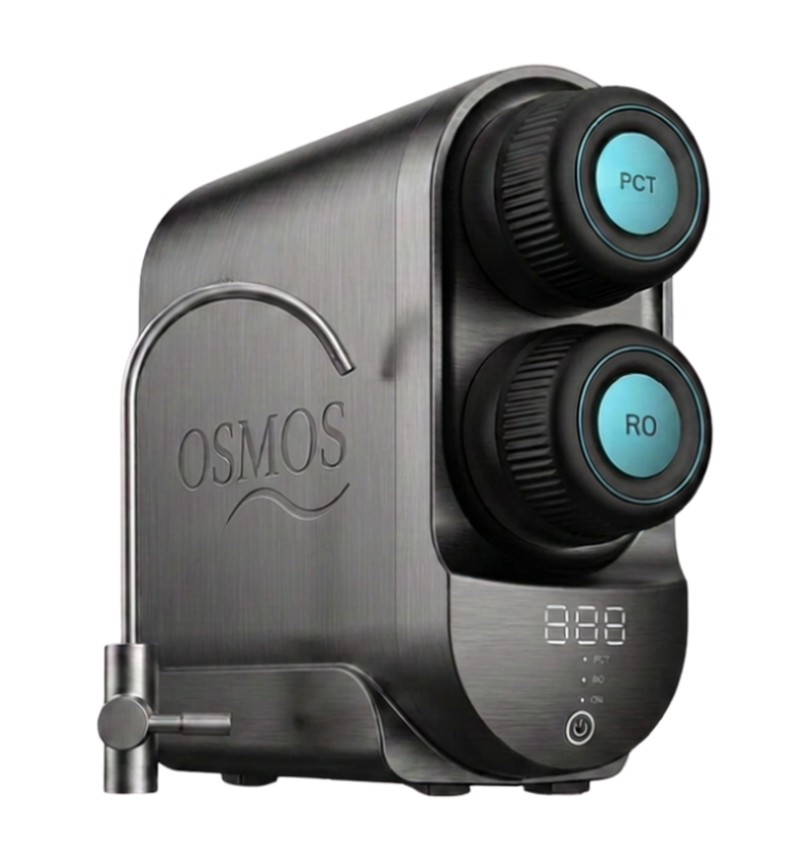

Cloro residual
Usado no tratamento para eliminar micro-organismos, pode permanecer na água e alterar sabor e odor.
Osmose Reversa Residencial
O purificador OSMOS elimina até 99% das impurezas da água da torneira — para sua família sentir a diferença em cada copo.
A realidade invisível
A água tratada atende aos padrões de potabilidade — mas isso não significa que ela esteja livre de substâncias e resíduos indesejados que permanecem, mesmo depois do tratamento convencional.
Usado no tratamento para eliminar micro-organismos, pode permanecer na água e alterar sabor e odor.
Chumbo, mercúrio e outros elementos podem se acumular ao longo da rede de distribuição.
Partículas sólidas em suspensão que comprometem a transparência e a pureza da água.
Fragmentos microscópicos, praticamente imperceptíveis, cada vez mais presentes em fontes de água.
Compostos originados de processos industriais e agrícolas que podem persistir mesmo após o tratamento.
Bactérias e vírus podem sobreviver em níveis não detectáveis a olho nu.
A água pode parecer cristalina. Isso não significa que ela esteja completamente pura.
Bem-estar em cada detalhe
Elimina até 99% das impurezas
Remove metais pesados
Reduz o cloro
Remove odores
Remove sabores desagradáveis
Retém partículas microscópicas
Água extremamente pura
Mais saúde
Mais segurança
Mais economia
Menos plástico
Melhor sabor
Processo
O fluxo se inicia com a captação da água diretamente da rede residencial.
A água passa por estágios de pré-filtragem que retêm sedimentos e partículas maiores.
A membrana semipermeável remove contaminantes em nível molecular.

O equipamento
Acabamento em aço escovado, controles precisos e display digital integrado. Cada sistema OSMOS foi projetado para unir engenharia de ponta a uma estética discreta e sofisticada — silencioso, compacto e feito para durar.
Solicite uma ConsultoriaEngenharia molecular
No coração de cada sistema OSMOS está uma membrana semipermeável de altíssima precisão. Sob pressão controlada, apenas as moléculas de água atravessam sua estrutura — enquanto contaminantes microscópicos ficam retidos e são descartados.
Nível molecular
Filtros convencionais atuam retendo partículas maiores, oferecendo uma purificação parcial. A Osmose Reversa vai além: opera em nível molecular, permitindo apenas a passagem das moléculas de água e proporcionando um padrão de pureza muito mais avançado.
Comparação
| Critério | Água da torneira | Filtro comum | OSMOS |
|---|---|---|---|
| Cloro | Presente | Reduzido | Eliminado |
| Metais pesados | Presente | Parcial | Removido |
| Microplásticos | Presente | Parcial | Removido |
| Sedimentos | Presente | Reduzido | Eliminado |
| Vírus | Possível | Não filtra | Retido |
| Bactérias | Possível | Parcial | Retido |
| Sabor | Variável | Melhorado | Puro |
| Odor | Variável | Reduzido | Neutro |
| Qualidade | Padrão | Intermediária | Premium |
| Pureza | Básica | Parcial | Molecular |
| Tecnologia | Tratamento convencional | Filtragem mecânica | Osmose Reversa |
Transformação
Saúde diária
A água participa diretamente de funções essenciais do organismo — hidratação, digestão, circulação e equilíbrio geral do corpo. Consumir água de alta pureza é um cuidado simples, mas com impacto profundo na qualidade de vida de toda a família.
Padrão de excelência
O princípio da Osmose Reversa é utilizado em ambientes que exigem controle rigoroso da qualidade da água — laboratórios, hospitais, indústrias farmacêuticas e processos alimentícios. A mesma tecnologia, agora acessível para residências e empresas.
Aplicações
Impacto ambiental
Excelência OSMOS
Confiança
“Minha família toda sente a diferença. A água tem outro sabor e a sensação de segurança não tem preço.”
Dúvidas frequentes
É um processo de purificação que utiliza pressão para forçar a água através de uma membrana semipermeável, retendo contaminantes em nível molecular.
O processo reduz minerais dissolvidos junto com os contaminantes. A maior parte dos minerais essenciais é obtida pela alimentação, não pela água.
Em condições normais de uso, a membrana tem vida útil estimada entre 2 e 3 anos, variando conforme a qualidade da água de entrada.
A manutenção é realizada por nossa equipe especializada, com troca periódica de filtros e verificação do sistema.
O consumo é extremamente baixo, dependendo do modelo — alguns sistemas operam apenas com pressão da rede.
Sim. Os sistemas OSMOS são projetados para instalação em apartamentos, casas, escritórios e estabelecimentos comerciais.
Todos os equipamentos possuem garantia de fabricante, além do suporte técnico especializado OSMOS.
A instalação profissional é rápida, geralmente concluída em poucas horas, sem transtornos para o dia a dia.
Sim, contamos com equipe técnica especializada e peças originais para todo o suporte pós-venda.
Compromisso institucional
Transforme a qualidade da água da sua casa com a tecnologia de Osmose Reversa da OSMOS e descubra uma nova forma de cuidar da saúde e do bem-estar.
Obrigado! Um consultor OSMOS entrará em contato em breve.